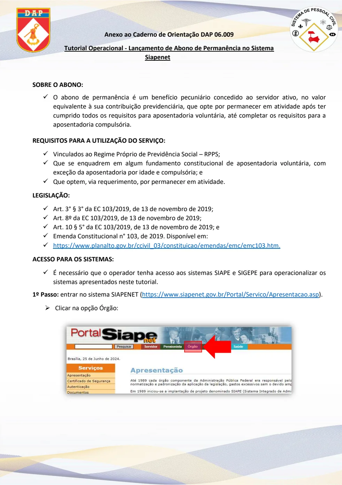
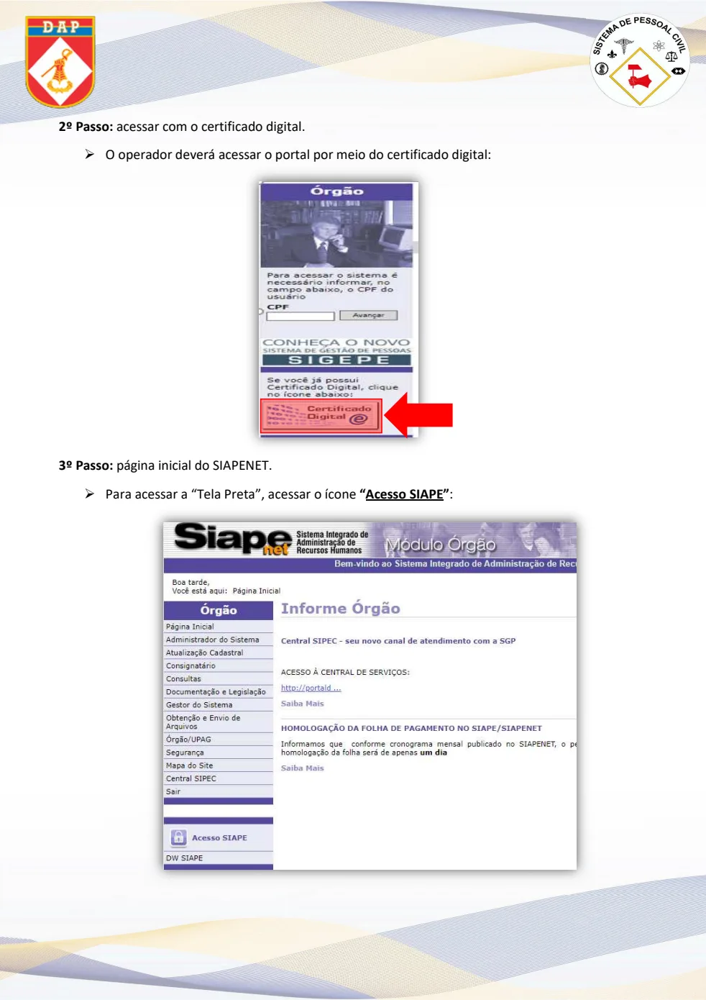
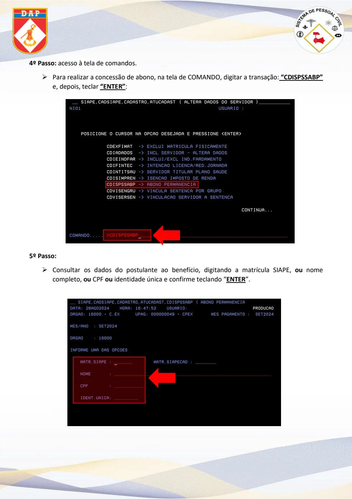
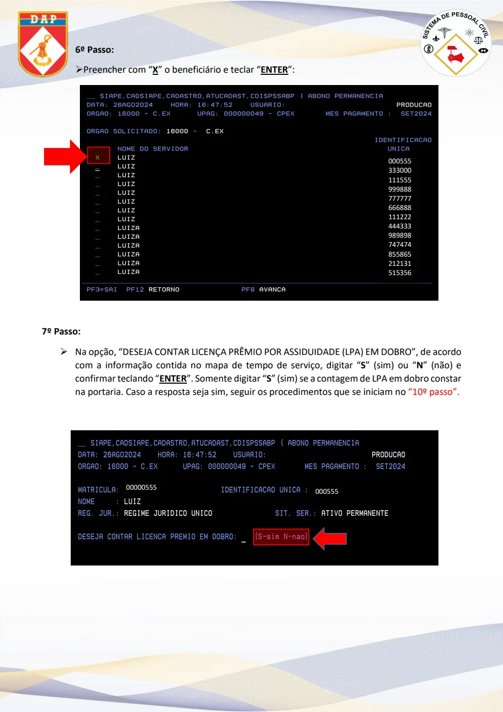
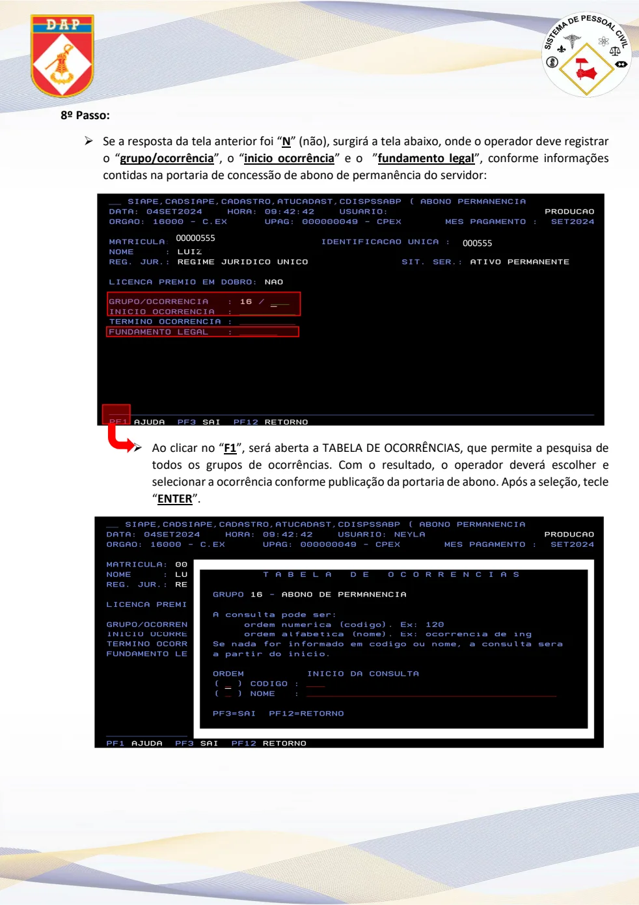
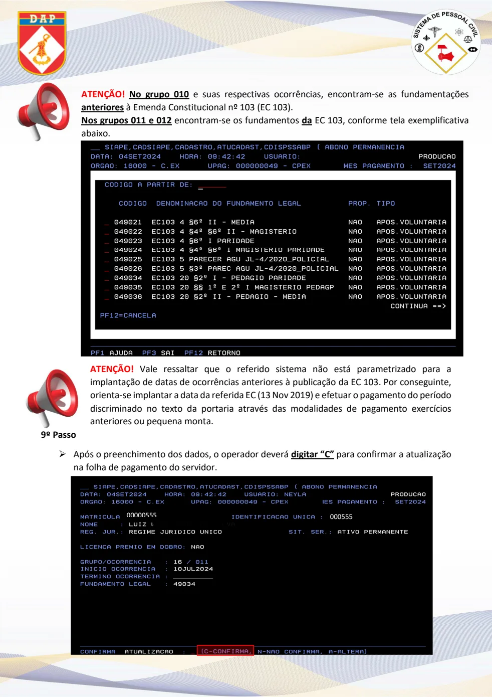
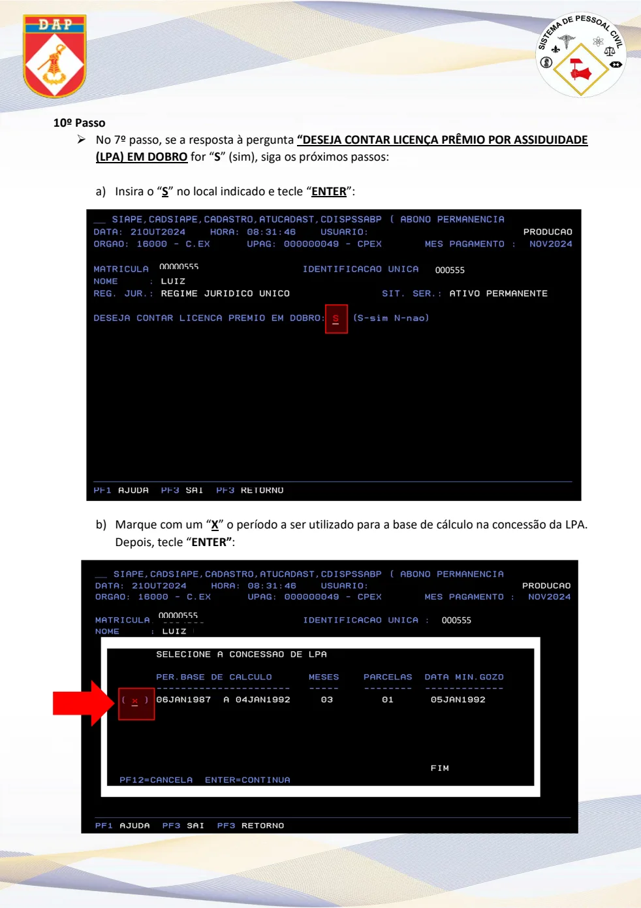
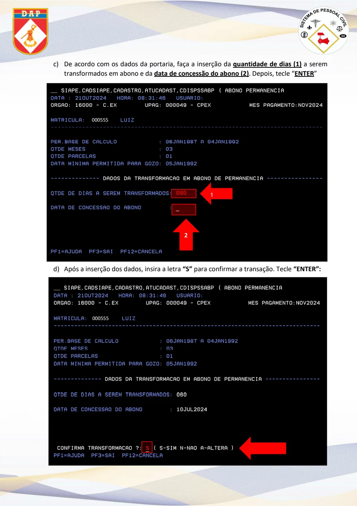
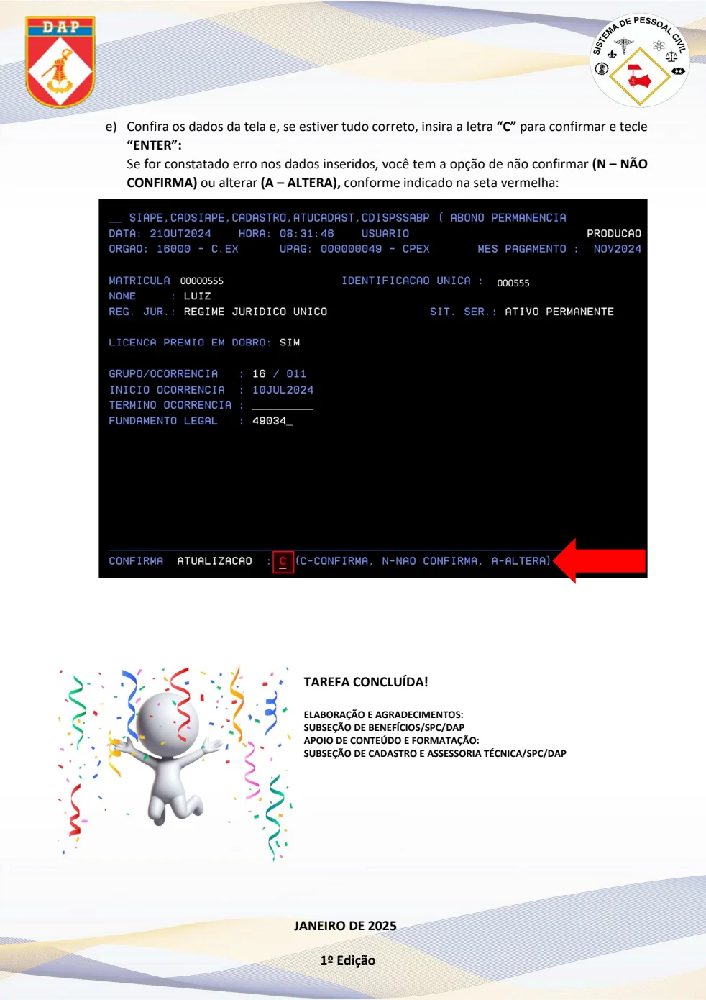

Texto extraído da edição fornecida, sem atualização normativa. Consulte a página original para conferir tabelas, formulários e instruções ilustradas. A numeração dos links corresponde à página do arquivo PDF.
Requisitos e acesso
PDF · p. 1Anexo ao Caderno de Orientação DAP 06.009
Tutorial Operacional - Lançamento de Abono de Permanência no Sistema
Siapenet
SOBRE O ABONO:
✓
O abono de permanência é um benefício pecuniário co ncedido ao servidor ativo, no valor
equivalente à sua contribuição previdenciária, que opte por permanecer em atividade após ter
cumprido todos os requisitos para aposentadoria vol untária, até completar os requisitos para a
aposentadoria compulsória.
REQUISITOS PARA A UTILIZAÇÃO DO SERVIÇO:
✓ Vinculados ao Regime Próprio de Previdência Social – RPPS;
✓ Que se enquadrem em algum fundamento constitucional de aposentadoria voluntária, com
exceção da aposentadoria por idade e compulsória; e
✓ Que optem, via requerimento, por permanecer em atividade.
LEGISLAÇÃO:
✓ Art. 3° § 3° da EC 103/2019, de 13 de novembro de 2019;
✓ Art. 8º da EC 103/2019, de 13 de novembro de 2019;
✓ Art. 10 § 5° da EC 103/2019, de 13 de novembro de 2019; e
✓ Emenda Constitucional n° 103, de 2019. Disponível em:
✓ https://www.planalto.gov.br/ccivil_03/constituicao/emendas/emc/emc103.htm.
ACESSO PARA OS SISTEMAS:
✓ É necessário que o operador tenha acesso aos sistem as SIAPE e SIGEPE para operacionalizar os
sistemas apresentados neste tutorial.
1º Passo: entrar no sistema SIAPENET (https://www.siapenet.gov.br/Portal/Servico/Apresentacao.asp ).
• Clicar na opção Órgão:
Ver página original — tabelas, imagens e diagramas

Certificado digital e SIAPE
PDF · p. 22º Passo: acessar com o certificado digital.
•
O operador deverá acessar o portal por meio do certificado digital:
3º Passo: página inicial do SIAPENET.
•
Para acessar a “Tela Preta”, acessar o ícone “Acesso SIAPE”:
Ver página original — tabelas, imagens e diagramas

Comando e matrícula
PDF · p. 34º Passo: acesso à tela de comandos.
•
Para realizar a concessão de abono, na tela de COMANDO, digitar a transação: “CDISPSSABP”
e, depois, teclar “ENTER” :
5º Passo:
•
Consultar os dados do postulante ao benefício, digi tando a matrícula SIAPE, ou nome
completo, ou CPF ou identidade única e confirme teclando “ENTER ”.
Ver página original — tabelas, imagens e diagramas

Beneficiário e licença-prêmio
PDF · p. 46º Passo:
•
Preencher com “ X” o beneficiário e teclar “ENTER ”:
7º Passo:
•
Na opção, “DESEJA CONTAR LICENÇA PRÊMIO POR ASSIDUIDADE (LPA) EM DOBRO”, de acordo
com a informação contida no mapa de tempo de serviç o, digitar “ S” (sim) ou “ N” (não) e
confirmar teclando “ENTER ”. Somente digitar “S” (sim) se a contagem de LPA em dobro constar
na portaria. Caso a resposta seja sim, seguir os procedimentos que se iniciam no “10º passo”.
000555
333000
111555
999888
777777
666888
111222
444333
989898
747474
855865
212131
515356
454648
00 000555 000555
Ver página original — tabelas, imagens e diagramas

Grupo e ocorrência
PDF · p. 58º Passo:
•
Se a resposta da tela anterior foi “ N” (não), surgirá a tela abaixo, onde o operador deve registrar
o “ grupo/ocorrência ”, o “ inicio ocorrência ” e o ” fundamento legal ”, conforme informações
contidas na portaria de concessão de abono de permanência do servidor:
•
Ao clicar no “ F1 ”, será aberta a TABELA DE OCORRÊNCIAS, que permite a pesquisa de
todos os grupos de ocorrências. Com o resultado, o operador deverá escolher e
selecionar a ocorrência conforme publicação da portaria de abono. Após a seleção, tecle
“ENTER ”.
00 000555 000555
Ver página original — tabelas, imagens e diagramas

Fundamentação
PDF · p. 6ATENÇÃO!
No grupo 010 e suas respectivas ocorrências, encontram-se as fu ndamentações
anteriores à Emenda Constitucional nº 103 (EC 103).
Nos grupos 011 e 012 encontram-se os fundamentos da EC 103, conforme tela exemplificativa
abaixo.
ATENÇÃO! Vale ressaltar que o referido sistema não está para metrizado para a
implantação de datas de ocorrências anteriores à pu blicação da EC 103. Por conseguinte,
orienta-se implantar a data da referida EC (13 Nov 2019) e efetuar o pagamento do período
discriminado no texto da portaria através das modal idades de pagamento exercícios
anteriores ou pequena monta.
9º Passo
• Após o preenchimento dos dados, o operador deverá digitar “C” para confirmar a atualização
na folha de pagamento do servidor.
00 000555 000555
Ver página original — tabelas, imagens e diagramas

Licença-prêmio em dobro
PDF · p. 710º Passo
•
No 7º passo, se a resposta à pergunta “DESEJA CONTAR LICENÇA PRÊMIO POR ASSIDUIDADE
(LPA) EM DOBRO for “S” (sim), siga os próximos passos:
a)
Insira o “ S” no local indicado e tecle “ ENTER ”:
b)
Marque com um “ X” o período a ser utilizado para a base de cálculo na concessão da LPA.
Depois, tecle “ ENTER” :
00 000555 000555
00 000555 000555
Ver página original — tabelas, imagens e diagramas

Dias e concessão
PDF · p. 8c)
De acordo com os dados da portaria, faça a inserção da quantidade de dias (1) a serem
transformados em abono e da data de concessão do abono (2) . Depois, tecle “ ENTER ”
d)
Após a inserção dos dados, insira a letra “S” para confirmar a transação. Tecle “ENTER”:
000555
1
2
000555
Ver página original — tabelas, imagens e diagramas

Confirmação final
PDF · p. 9e)
Confira os dados da tela e, se estiver tudo correto, insira a letra “C” para confirmar e tecle
“ENTER”:
Se for constatado erro nos dados inseridos, você te m a opção de não confirmar (N – NÃO
CONFIRMA) ou alterar (A – ALTERA), conforme indicado na seta vermelha:
TAREFA CONCLUÍDA!
ELABORAÇÃO E AGRADECIMENTOS:
SUBSEÇÃO DE BENEFÍCIOS/SPC/DAP
APOIO DE CONTEÚDO E FORMATAÇÃO:
SUBSEÇÃO DE CADASTRO E ASSESSORIA TÉCNICA/SPC/DAP
JANEIRO DE 2025
1º Edição
00 000555 000555
Ver página original — tabelas, imagens e diagramas
